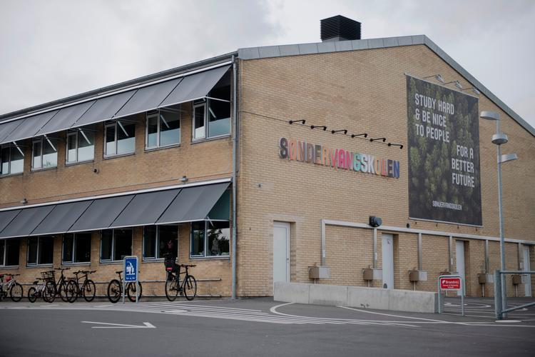

POLITIKEN
FREDAG
En faktor er hemmeligheden ved den danske vaccinesuccess

En faktor er hemmeligheden ved den danske vaccinesuccess

En faktor er hemmeligheden ved den danske vaccinesuccess

Nuuk og Thorshavn får nu papir på udenrigspolitisk indflydelse

Da gymnasierektor læste om snyd med afgangsprøver på succesrig skole, blev hun både lettet og vred